vignettes/KumeScaffolding.Rmd
KumeScaffolding.Rmd
knitr::opts_chunk$set(cache = TRUE,
dev = c('png', 'svg'),
fig.ext= c('png', 'svg'),
fig.width = 10,
fig.height = 10)This vignette produces a scaffolding guide to be used with the KUM-M3 genome for plotting purposes.
library('OikScrambling') |> suppressPackageStartupMessages()
library('patchwork') |> suppressPackageStartupMessages()
ggplot2::theme_set(theme_bw())
genomes <- OikScrambling:::loadAllGenomes()## Warning in runHook(".onLoad", env, package.lib, package): input string
## 'Génoscope' cannot be translated from 'ANSI_X3.4-1968' to UTF-8, but is valid
## UTF-8
## Warning in runHook(".onLoad", env, package.lib, package): input string
## 'Génoscope' cannot be translated from 'ANSI_X3.4-1968' to UTF-8, but is valid
## UTF-8
load("BreakPoints.Rdata")
# Helper function to flip many contigs at once.
flipContigsForOxfordPlot <- function(gb, flip_which=NULL) {
grl <- split(gb, seqnames(gb$query))
grl <- endoapply(grl, function(s) {
if( ! identical(unique(as.character(seqnames(s$query))), character(0)) ) {
if(unique(seqnames(s$query)) %in% flip_which ) {
s <- GenomicBreaks::reverse(s, query=TRUE)
s
}
}
s
})
ogb <- unlist(grl) |> unname()
ogb
}
# Let's remove the contigs that have their main match elsewhere.
QTcoverage <- function(gb) {
stopifnot (length(seqlevels(gb)) == 1) # Not ready for full objects
stopifnot (!any(is.na(seqlengths(gb$query))))
grl <- split(gb, seqnames(gb$query))
lapply(grl, \(gb) sum(width(gb$query))) |> unlist() / seqlengths(gb$query)
}The Kume draft assembly contains long contigs that can be scaffolded into chromosomes. Some sequences may be missing between these contigs, but the absence of large gaps in the plots at the junction between contigs suggest that this is not a problem for the use we make of this scaffolding.
The best match for chr1 in the Kume assembly is
contig_3_1. It maps roughly in the 8,000,000 – 13,000,000
region.
bestMatch <- function(gb)
tapply(width(gb$query), seqnames(gb$query), sum) |> sort() |> tail(1) |> names()
coa$Oki_Kum |> plyranges::filter(seqnames == "chr1") |> bestMatch()## [1] "contig_3_1"The next best match, contig_27_1 is most of chr1’s short
arm.
coa$Oki_Kum |> plyranges::filter(seqnames == "chr1", seqnames(query)!="contig_3_1") |> bestMatch()## [1] "contig_27_1"
coa$Oki_Kum |> plotApairOfChrs(chrQ = "contig_27_1")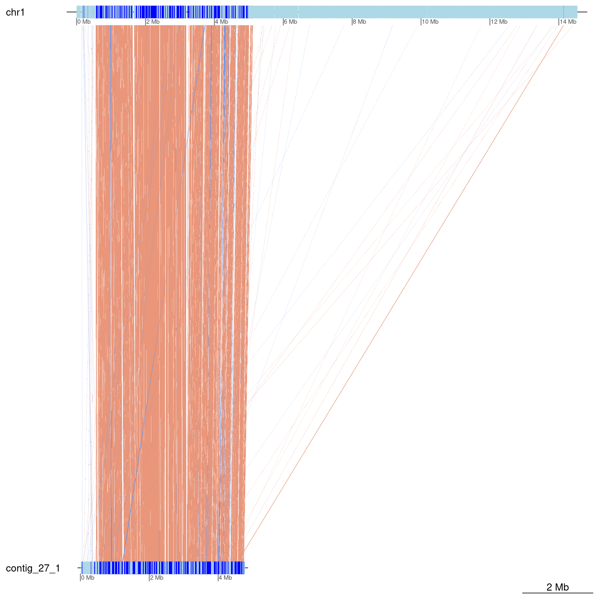
Oki_Kum_Chr1 <- gbs$Oki_Kum |> plyranges::filter(seqnames == "chr1")
seqlevels(Oki_Kum_Chr1) <- seqlevelsInUse(Oki_Kum_Chr1)
seqlevels(Oki_Kum_Chr1$query) <- seqlevelsInUse(Oki_Kum_Chr1$query)
makeOxfordPlots(Oki_Kum_Chr1, col='strand') + ggtitle("Everything from KUM-M3 that matches Oki's Chr1")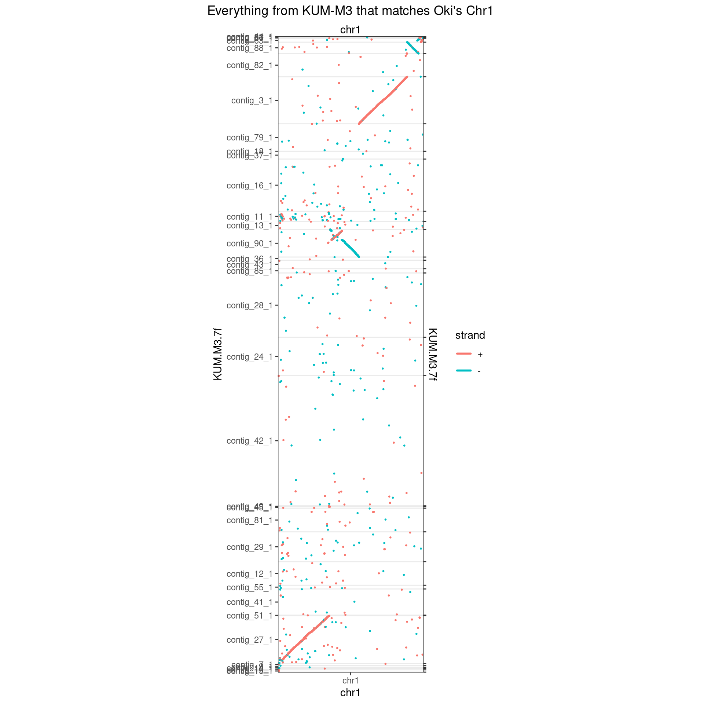
scafs$Kum_Oki <- list(Chr1 = data.frame(
contig = c("contig_27_1", "contig_90_1", "contig_3_1", "contig_88_1", "contig_87_1", "contig_63_1"),
orientation = c(1, -1, 1, -1, 1, 1)
))
contigsToMerge_start <- c(1, cumsum(seqlengths(gbs$Oki_Kum$query)[scafs$Kum_Oki$Chr1$contig])) |> unname() |> head(-1)
contigsToMerge_end <- (cumsum(seqlengths(coa$Oki_Kum$query)[scafs$Kum_Oki$Chr1$contig]) -1) |> unname()
contigsToMerge_oldPos <- GRanges("chr1", IRanges(contigsToMerge_start, contigsToMerge_end))
names(contigsToMerge_oldPos) <- scafs$Kum_Oki$Chr1$contig
contigsToMerge_oldPos## GRanges object with 6 ranges and 0 metadata columns:
## seqnames ranges strand
## <Rle> <IRanges> <Rle>
## contig_27_1 chr1 1-4780084 *
## contig_90_1 chr1 4780085-7534138 *
## contig_3_1 chr1 7534139-12219121 *
## contig_88_1 chr1 12219122-13349956 *
## contig_87_1 chr1 13349957-13492925 *
## contig_63_1 chr1 13492926-13839560 *
## -------
## seqinfo: 1 sequence from an unspecified genome; no seqlengths
annot <- genoPlotR::annotation(x1=start(contigsToMerge_oldPos), x2=end(contigsToMerge_oldPos), text=names(contigsToMerge_oldPos), rot=30)
gbs$Oki_Kum |> swap() |> scaffoldByFlipAndMerge(scafs$Kum_Oki) |> plotApairOfChrs(dna_seg_scale=TRUE, annotations = annot)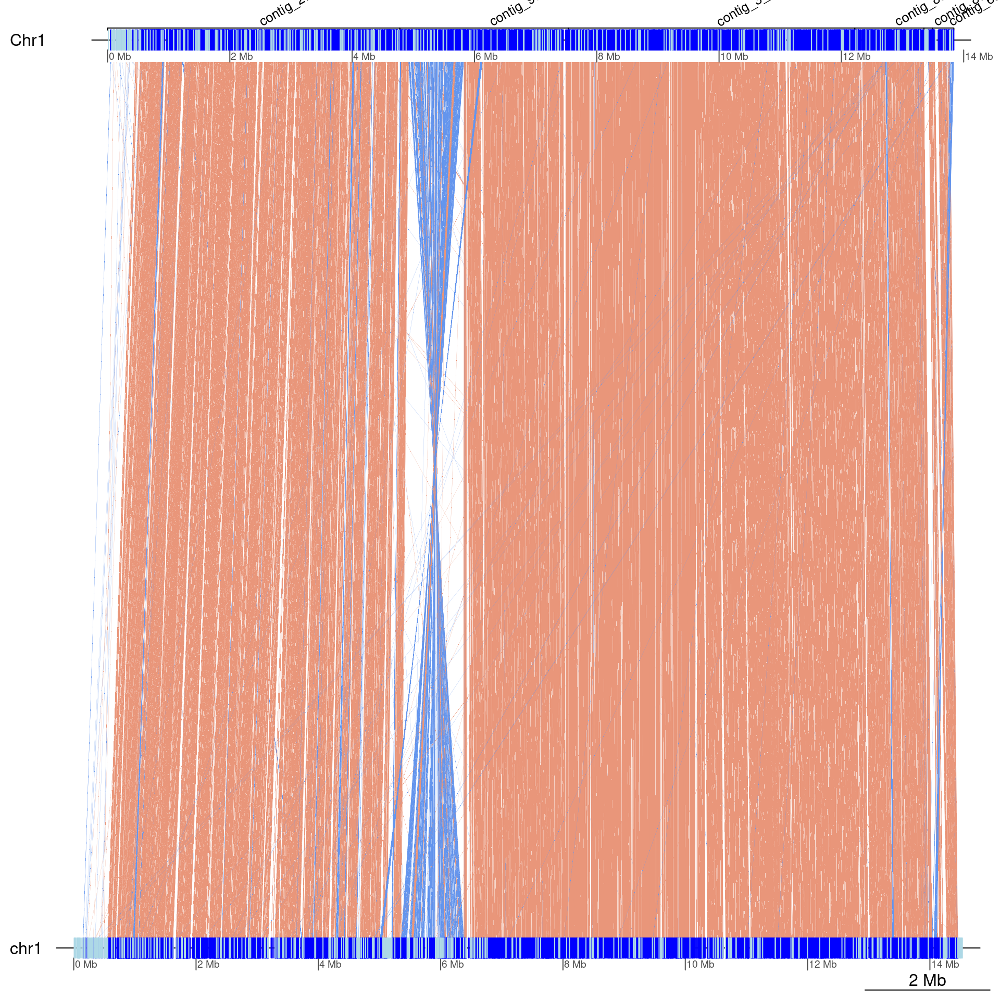
Oki_Kum_Chr2 <- gbs$Oki_Kum |> plyranges::filter(seqnames == "chr2")
seqlevels(Oki_Kum_Chr2) <- seqlevelsInUse(Oki_Kum_Chr2)
seqlevels(Oki_Kum_Chr2$query) <- seqlevelsInUse(Oki_Kum_Chr2$query)
makeOxfordPlots(Oki_Kum_Chr2, col='strand') + ggtitle("Everything from KUM-M3 that matches Oki's Chr2")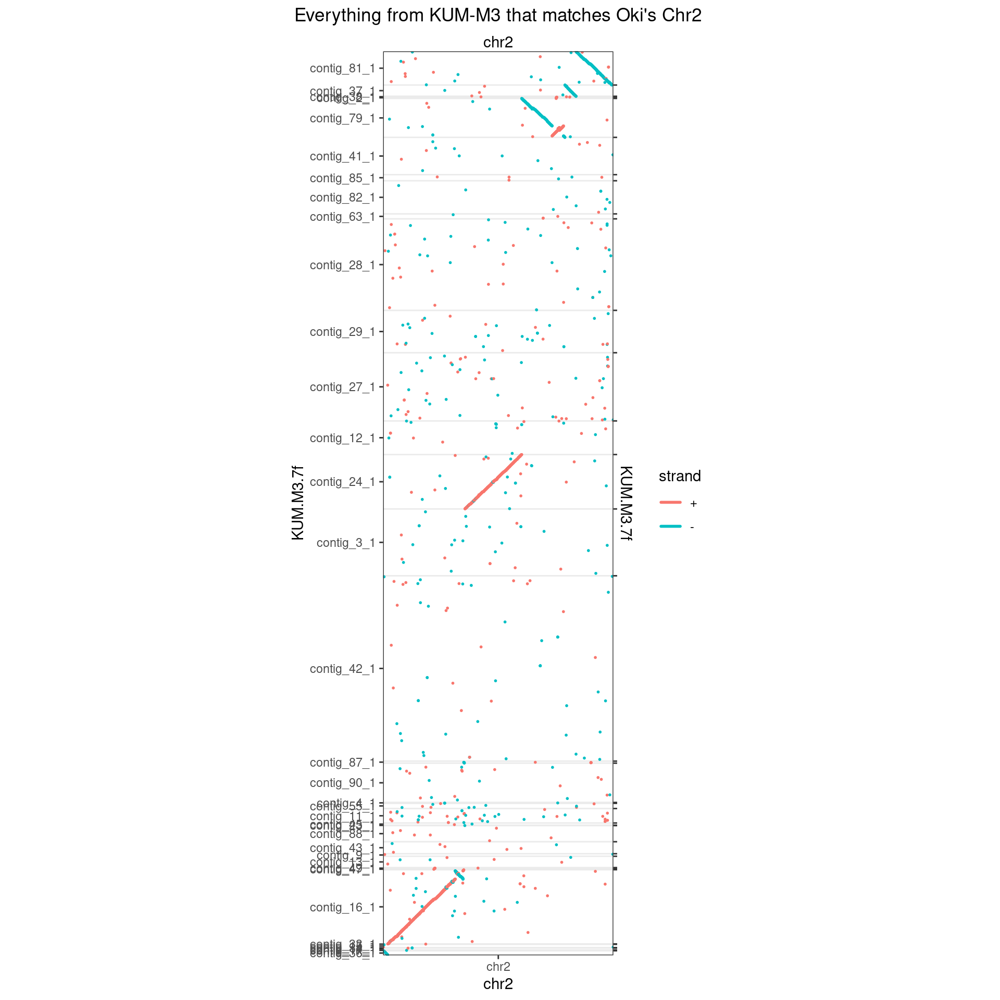
Let’s remove the contigs that have their main match elsewhere.
Oki_Kum_Chr2[seqnames(Oki_Kum_Chr2$query) %in% seqlevels(Oki_Kum_Chr2$query)[QTcoverage(Oki_Kum_Chr2) < 0.5]] <- NULL
seqlevels(Oki_Kum_Chr2$query) <- seqlevelsInUse(Oki_Kum_Chr2$query)
makeOxfordPlots(Oki_Kum_Chr2, col='strand') + ggtitle("Main hits from KUM-M3 to OKI's Chr2")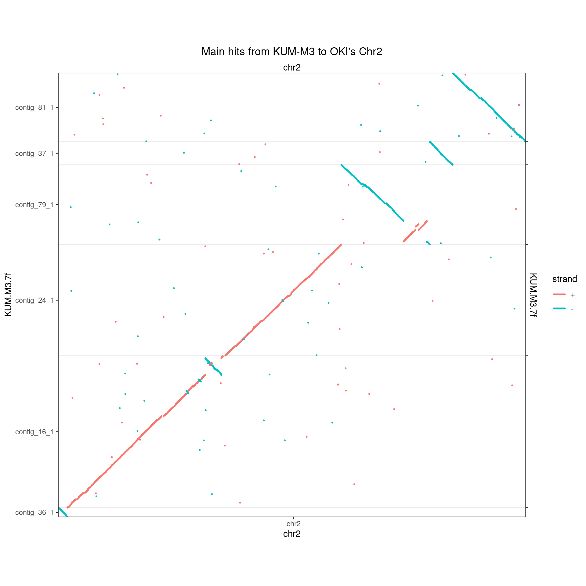
scafs$Kum_Oki[["Chr2"]] <- data.frame(
contig = c("contig_36_1", "contig_16_1", "contig_24_1", "contig_79_1", "contig_37_1", "contig_81_1"),
orientation = c(-1, 1, 1, -1, -1, -1)
)
contigsToMerge_start <- c(1, cumsum(seqlengths(gbs$Oki_Kum$query)[scafs$Kum_Oki$Chr2$contig])) |> unname() |> head(-1)
contigsToMerge_end <- (cumsum(seqlengths(coa$Oki_Kum$query)[scafs$Kum_Oki$Chr2$contig]) -1) |> unname()
contigsToMerge_oldPos <- GRanges("chr2", IRanges(contigsToMerge_start, contigsToMerge_end))
names(contigsToMerge_oldPos) <- scafs$Kum_Oki$Chr2$contig
contigsToMerge_oldPos## GRanges object with 6 ranges and 0 metadata columns:
## seqnames ranges strand
## <Rle> <IRanges> <Rle>
## contig_36_1 chr2 1-319811 *
## contig_16_1 chr2 319812-5523357 *
## contig_24_1 chr2 5523358-9335672 *
## contig_79_1 chr2 9335673-12065686 *
## contig_37_1 chr2 12065687-12853372 *
## contig_81_1 chr2 12853373-15214355 *
## -------
## seqinfo: 1 sequence from an unspecified genome; no seqlengths
annot <- genoPlotR::annotation(x1=start(contigsToMerge_oldPos), x2=end(contigsToMerge_oldPos), text=names(contigsToMerge_oldPos), rot=30)
gbs$Oki_Kum |> swap() |> scaffoldByFlipAndMerge(scafs$Kum_Oki) |> plotApairOfChrs(chrT = 'Chr2', dna_seg_scale=TRUE, annotations = annot)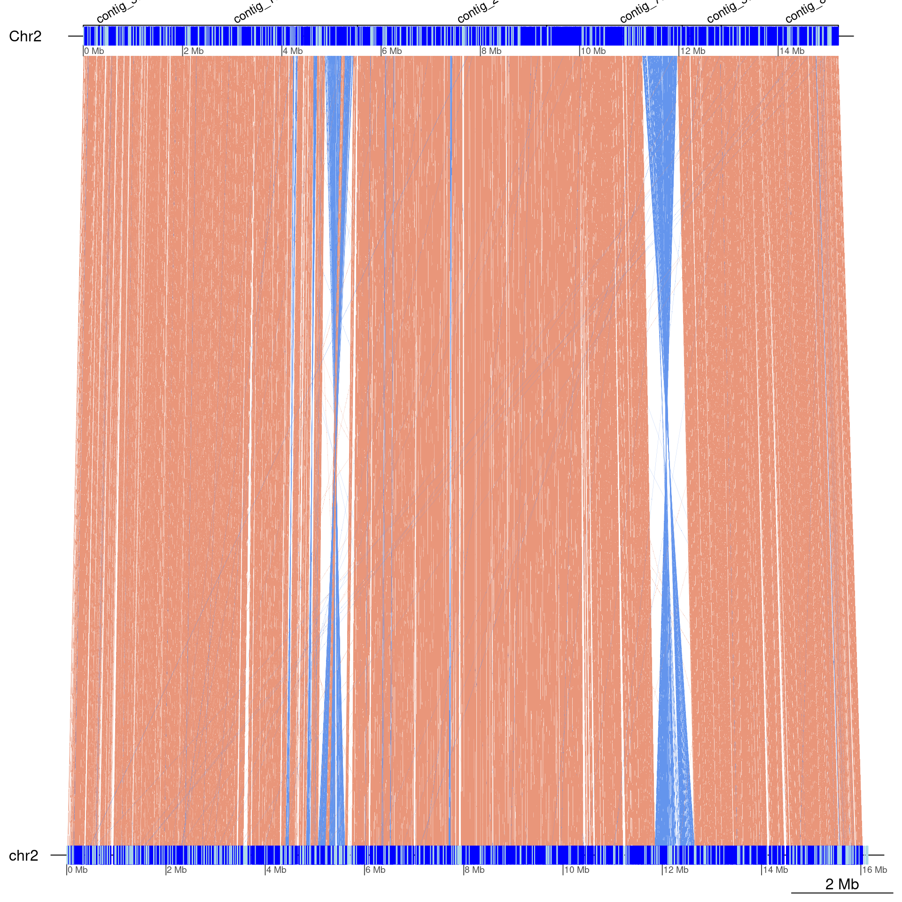
Oki_Kum_PAR <- gbs$Oki_Kum |> plyranges::filter(seqnames == "PAR")
seqlevels(Oki_Kum_PAR) <- seqlevelsInUse(Oki_Kum_PAR)
seqlevels(Oki_Kum_PAR$query) <- seqlevelsInUse(Oki_Kum_PAR$query)
makeOxfordPlots(Oki_Kum_PAR, col='strand') + ggtitle("Everything from KUM-M3 that matches OKI's PAR")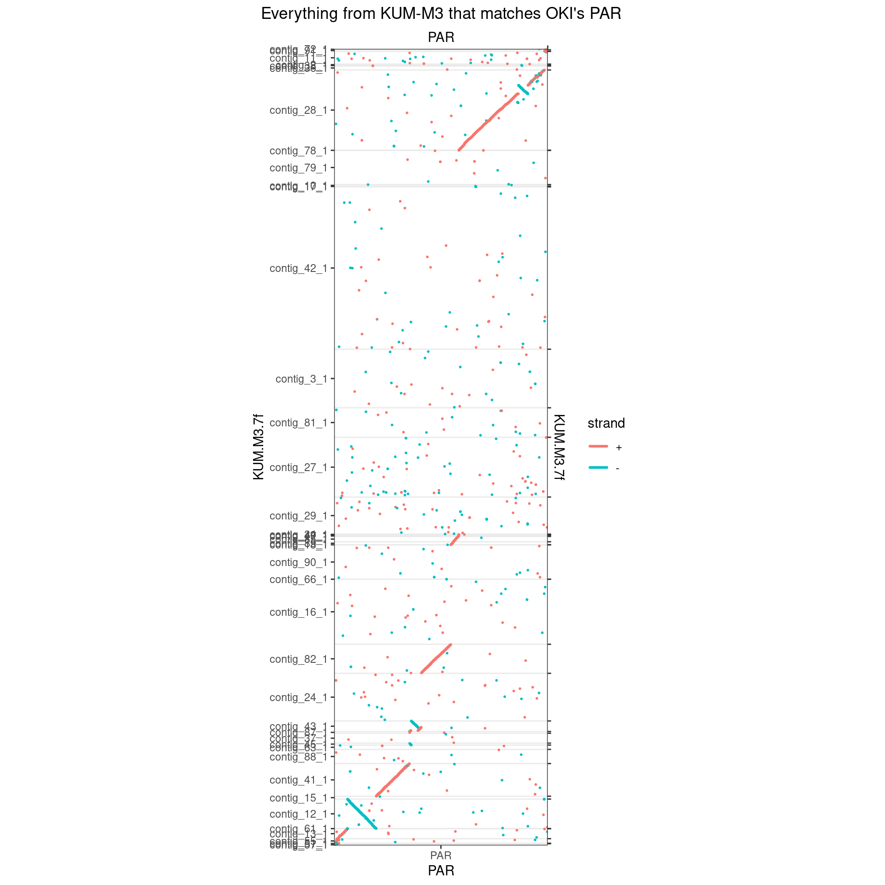
Let’s remove the contigs that have their main match elsewhere.
Oki_Kum_PAR[seqnames(Oki_Kum_PAR$query) %in% seqlevels(Oki_Kum_PAR$query)[QTcoverage(Oki_Kum_PAR) < 0.5]] <- NULL
seqlevels(Oki_Kum_PAR$query) <- seqlevelsInUse(Oki_Kum_PAR$query)
makeOxfordPlots(Oki_Kum_PAR, col='strand') + ggtitle("Main hits from KUM-M3 to OKI's PAR")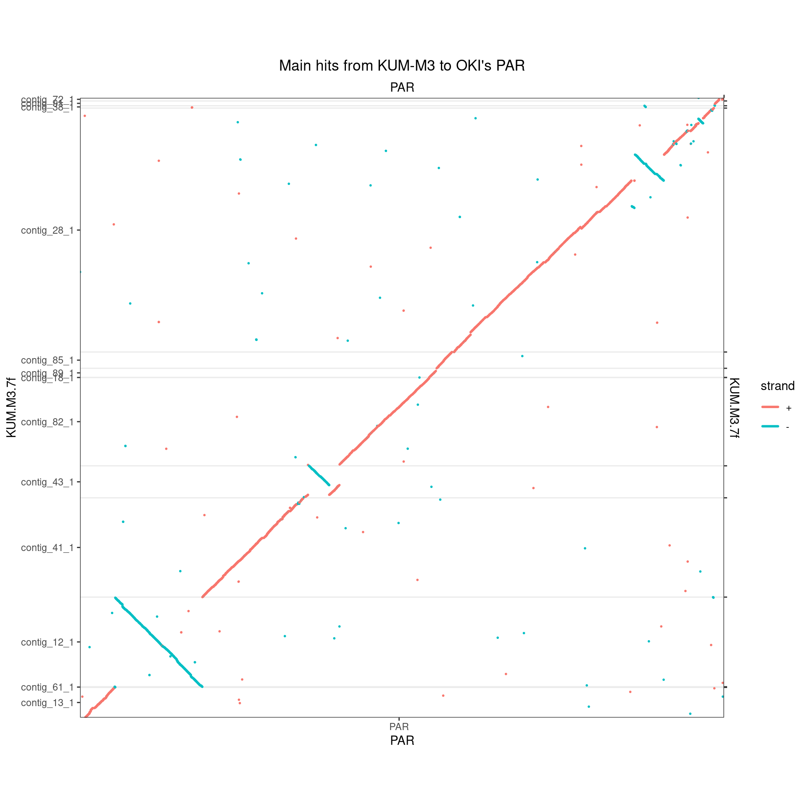
Let’s flip things around a little to get things as linear as they can be:
makeOxfordPlots( flipContigsForOxfordPlot(Oki_Kum_PAR, flip_which = c('contig_12_1', 'contig_43_1')), col='strand') + ggtitle("KUM-M3 contigs scaffolded and reoriented to PAR")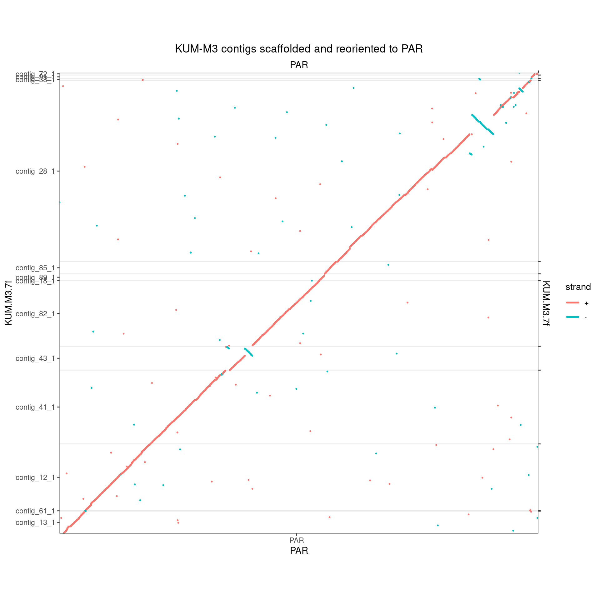
scafs$Kum_Oki[["PAR"]] <- data.frame(
contig = c('contig_13_1', 'contig_12_1', 'contig_41_1', 'contig_43_1', 'contig_82_1', 'contig_89_1', 'contig_85_1', 'contig_28_1', 'contig_91_1'),
orientation = c(1, -1, 1, -1, 1, 1, 1, 1, 1)
)
contigsToMerge_start <- c(1, cumsum(seqlengths(gbs$Oki_Kum$query)[scafs$Kum_Oki$PAR$contig])) |> unname() |> head(-1)
contigsToMerge_end <- (cumsum(seqlengths(coa$Oki_Kum$query)[scafs$Kum_Oki$PAR$contig]) -1) |> unname()
contigsToMerge_oldPos <- GRanges("chr2", IRanges(contigsToMerge_start, contigsToMerge_end))
names(contigsToMerge_oldPos) <- scafs$Kum_Oki$PAR$contig
contigsToMerge_oldPos## GRanges object with 9 ranges and 0 metadata columns:
## seqnames ranges strand
## <Rle> <IRanges> <Rle>
## contig_13_1 chr2 1-793614 *
## contig_12_1 chr2 793615-3150936 *
## contig_41_1 chr2 3150937-5762928 *
## contig_43_1 chr2 5762929-6604164 *
## contig_82_1 chr2 6604165-8926783 *
## contig_89_1 chr2 8926784-9168286 *
## contig_85_1 chr2 9168287-9596337 *
## contig_28_1 chr2 9596338-16011565 *
## contig_91_1 chr2 16011566-16138340 *
## -------
## seqinfo: 1 sequence from an unspecified genome; no seqlengths
annot <- genoPlotR::annotation(x1=start(contigsToMerge_oldPos), x2=end(contigsToMerge_oldPos), text=names(contigsToMerge_oldPos), rot=30)
gbs$Oki_Kum |> swap() |> scaffoldByFlipAndMerge(scafs$Kum_Oki) |> plotApairOfChrs(chrT = 'PAR', dna_seg_scale=TRUE, annotations = annot)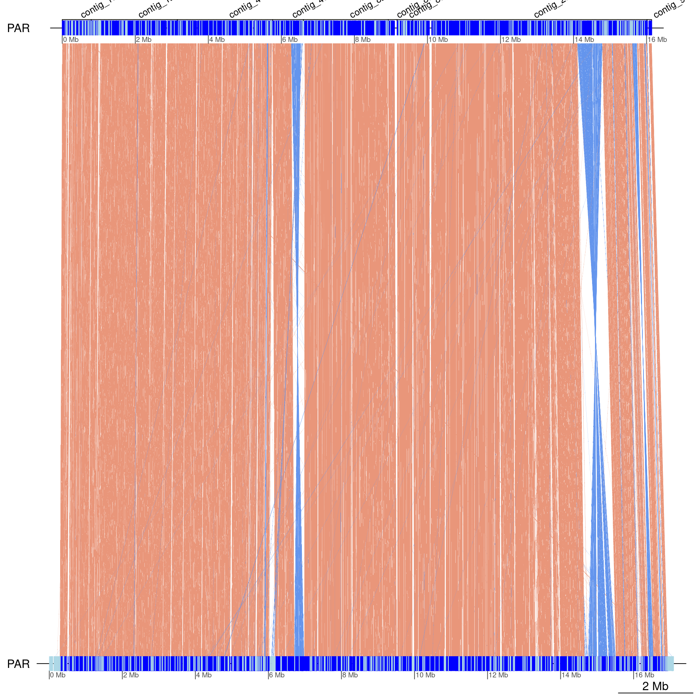
XSR is already complete.
Oki_Kum_XSR <- gbs$Oki_Kum |> plyranges::filter(seqnames == "XSR")
seqlevels(Oki_Kum_XSR) <- seqlevelsInUse(Oki_Kum_XSR)
seqlevels(Oki_Kum_XSR$query) <- seqlevelsInUse(Oki_Kum_XSR$query)
makeOxfordPlots(Oki_Kum_XSR, col='strand') + ggtitle("Everything from KUM-M3 that matches OKI's XSR")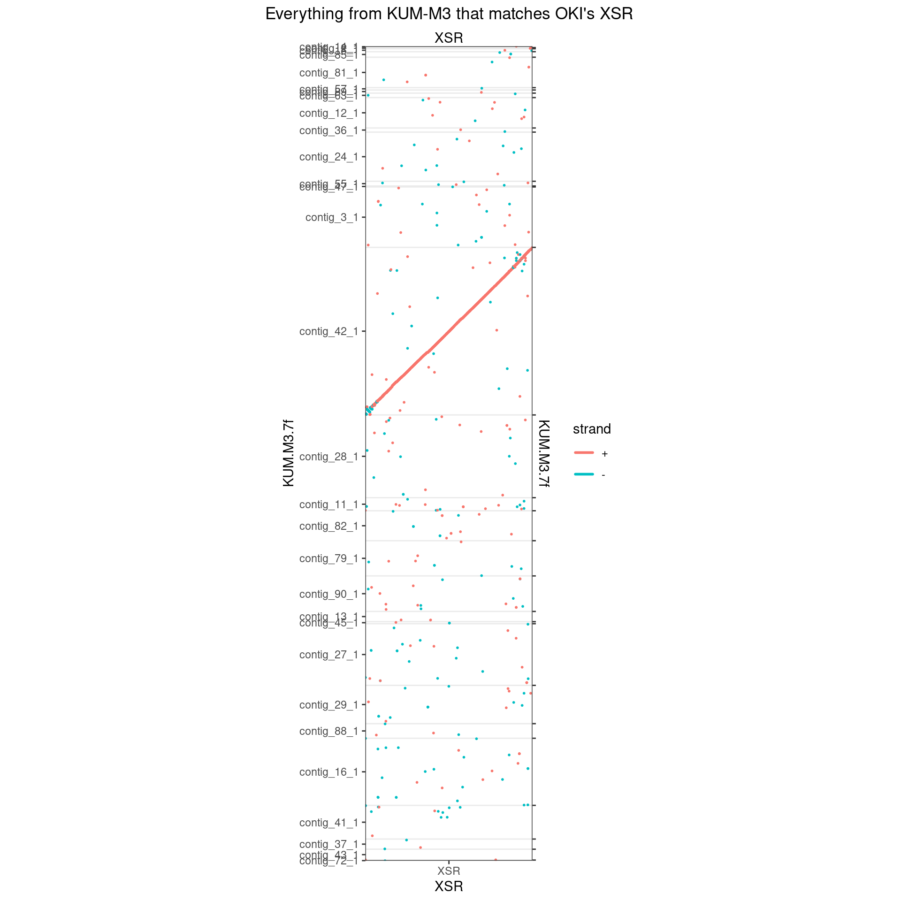
scafs$Kum_Oki[["XSR"]] <- data.frame(
contig = c('contig_42_1'),
orientation = c(1)
)
Oki_Kum_YSR <- gbs$Oki_Kum |> plyranges::filter(seqnames == "YSR")
seqlevels(Oki_Kum_YSR) <- seqlevelsInUse(Oki_Kum_YSR)
seqlevels(Oki_Kum_YSR$query) <- seqlevelsInUse(Oki_Kum_YSR$query)
makeOxfordPlots(Oki_Kum_YSR, col='strand')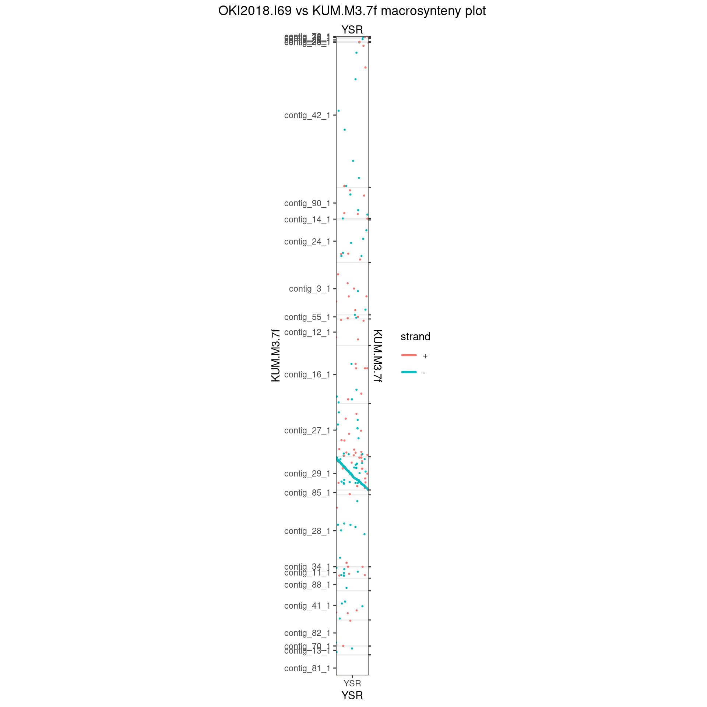
scafs$Kum_Oki[["YSR"]] <- data.frame(
contig = c('contig_29_1'),
orientation = c(-1)
)
# Store the results in the package for re-use in other vignettes
# usethis::use_data(scafs, overwrite = TRUE)
identical(scafs$Kum_Oki, OikScrambling::scafs$Kum_Oki)## [1] TRUE
scaf_Kum_Oki <- scaffoldByFlipAndMerge(gbs$Oki_Kum |> swap(), scafs$Kum_Oki, drop = TRUE) |> swap()
scaf_Kum_Oki |> makeOxfordPlots()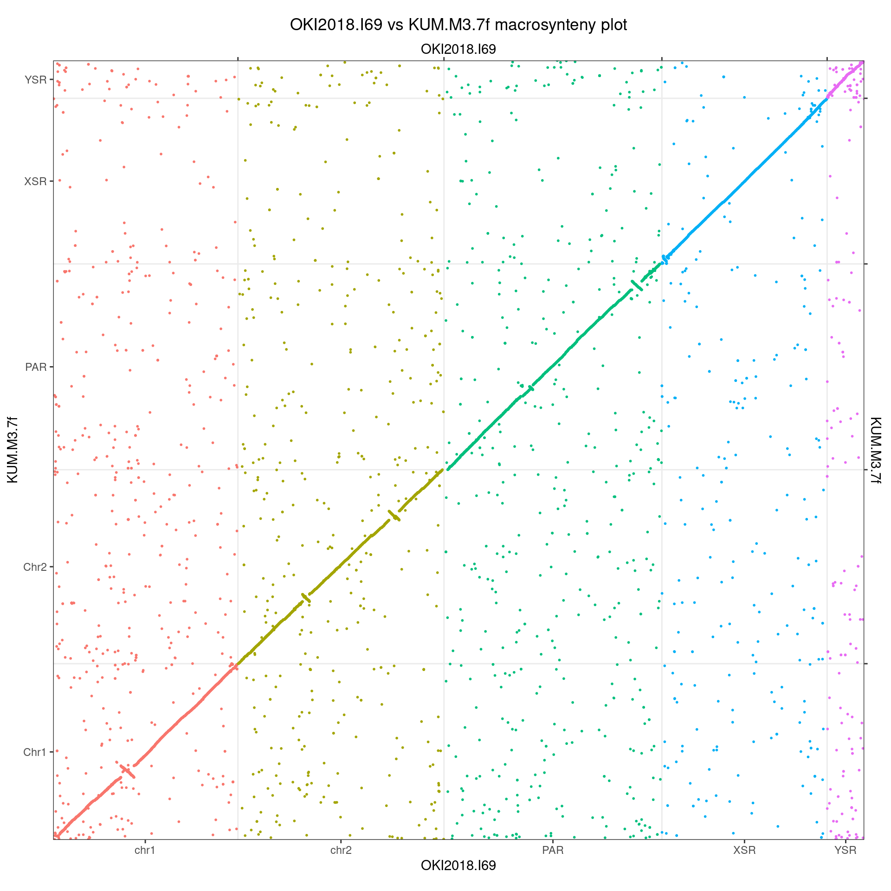
# Original plot for comparison
gbs$Oki_Kum |> makeOxfordPlots()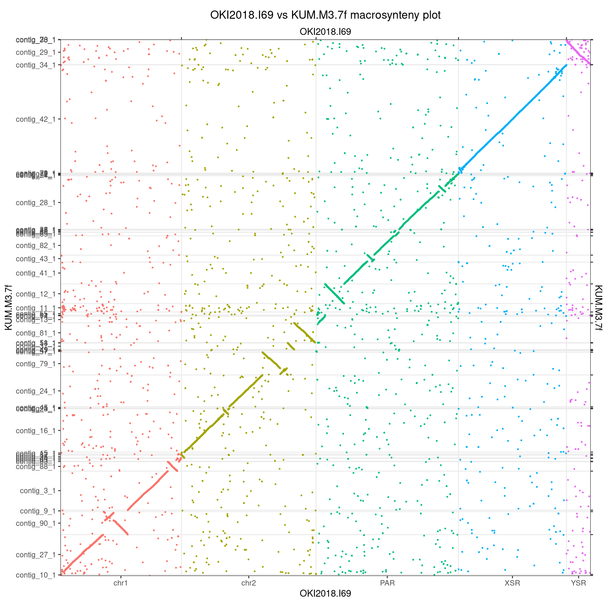